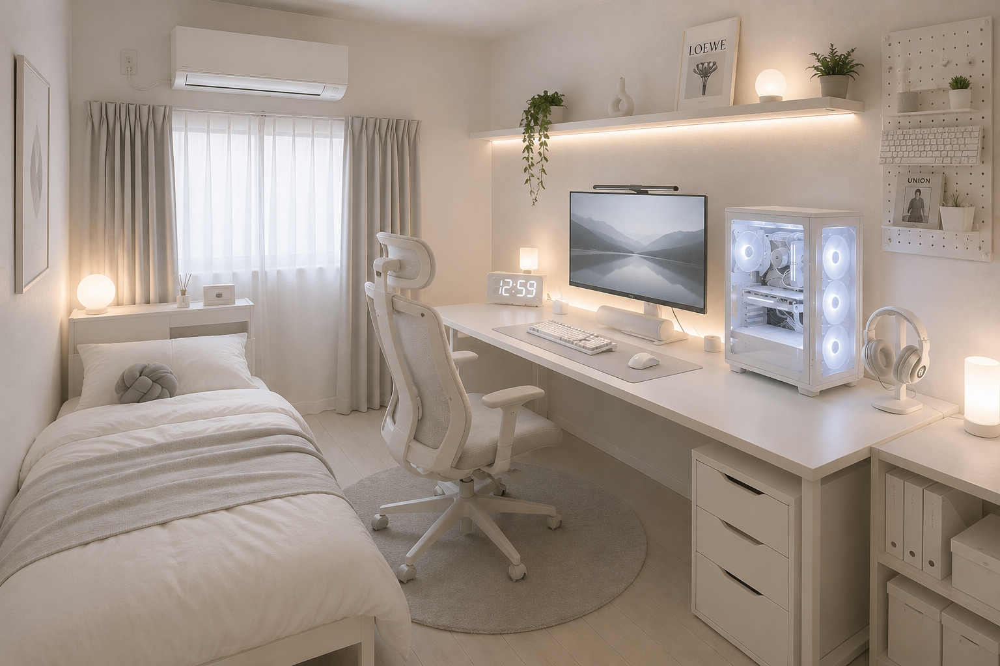
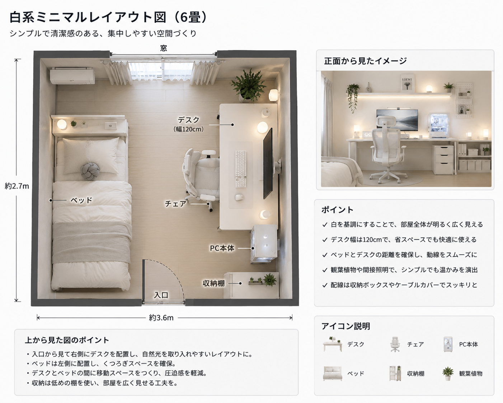

白形ミニマルレイアウト

概要
白を基調としたシンプルで清潔感のあるPC部屋レイアウトです。余計な物を置かず、作業やゲームに集中しやすい環境を目指しています。韓国風や北欧風のインテリアが好きな方にもおすすめです。
基本情報
| 部屋サイズ | 6畳 |
|---|---|
| 用途 | 普段使い・ゲーム・勉強 |
| 予算 | 約180,000円～280,000円（PC本体除く） |
| デスクサイズ | 幅120cm × 奥行60cm |
| 再現難易度 | ★★★☆☆ |
レイアウト図

必要なもの
- 白色デスク（120cm）
- 白色チェア
- PC
- 白色キーボード
- 白色マウス
おすすめポイント
- インテリアとしてもおしゃれ
- 勉強・仕事・ゲームのどれにも使いやすい
- 部屋全体が明るく広く見える
初心者向けアドバイス
家具や周辺機器は、最初からすべて白色で揃えなくても問題ありません。まずはデスクやモニターなど大きなアイテムを白系にすると、部屋全体に統一感が生まれます。配線を隠すケーブルボックスを使うと、さらにすっきりした印象になります。